Source geometry is pushed on feat/impressionist-277. The route joins the stair hall, fitted passage, gallery A, gallery B and the existing modern door. Four works use already-tracked museum photographs. Twelve paintings and the bronze remain on the missing-work list.
These are footage beside unbaked draft pictures. The close review uses .55 ambient fill; the small inset retains the actual game's zero unbaked far-room ambient. Lighting and the orchestrator's bake are pending. The fitted depths and extra passage return are inferred, with fixed old doors and other rooms retained.
Draft architecture: zero failures. Forty reciprocal route trials: zero failures. Source-draft catalogue: 181 built /181 declared. Full repository check still fails on the older installed scenes: three medieval meshes and four new paintings need the orchestrator's bake/install.
Measurements, exact door/trial coordinates and all source edits · Thirteen missing works and four existing-image placements · Recorded draft checks and source hashes
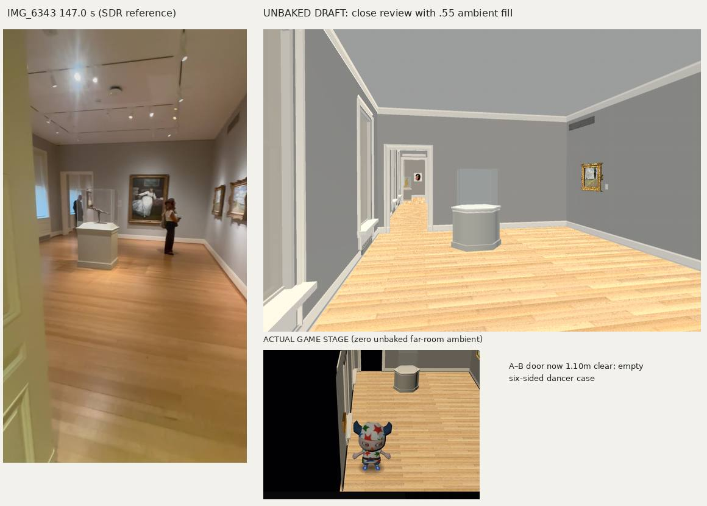
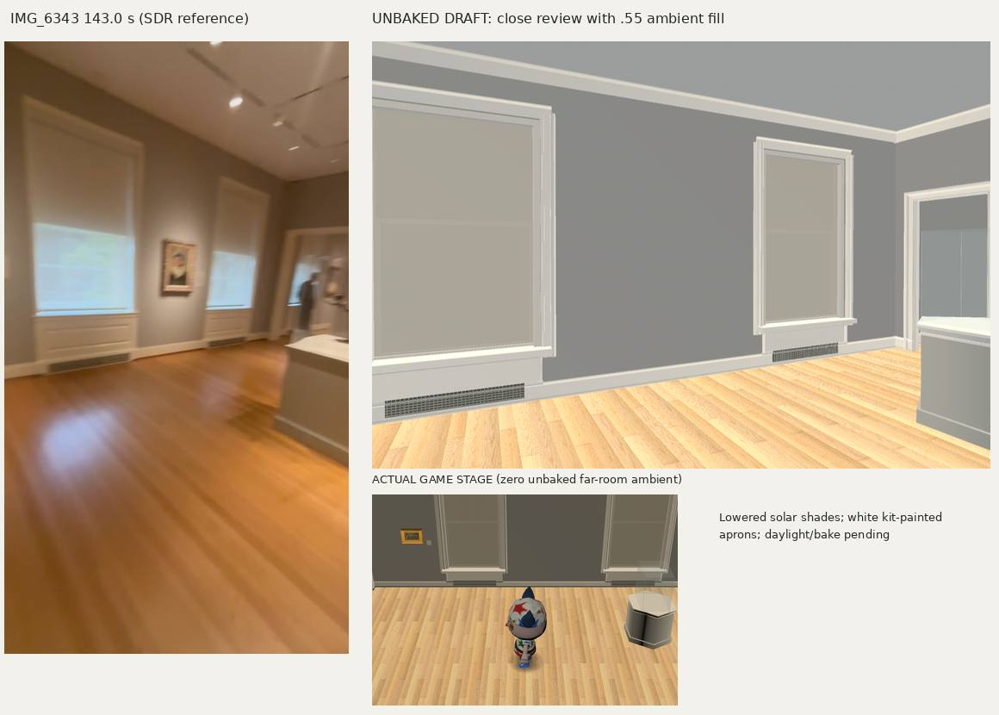
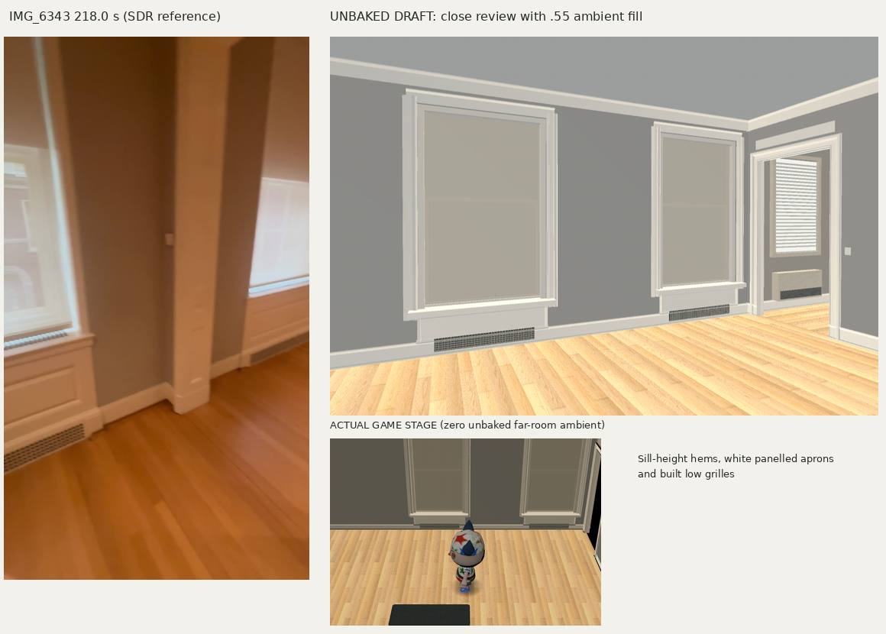
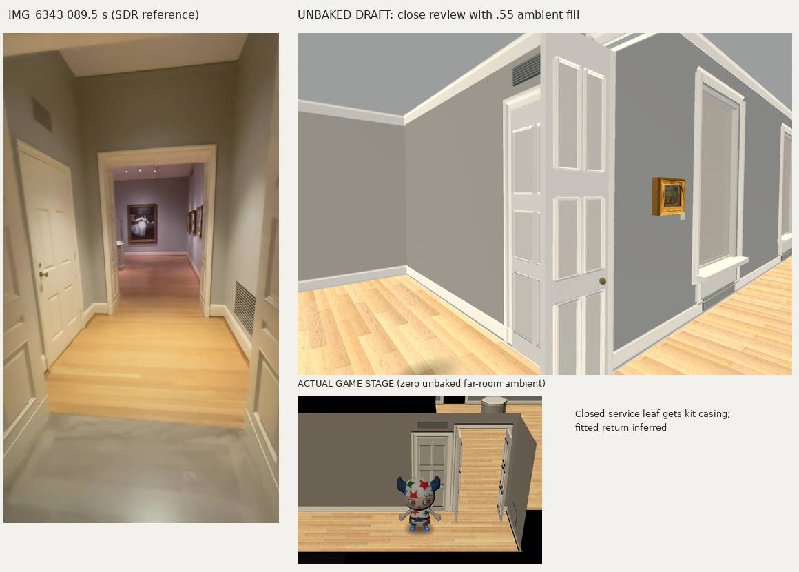
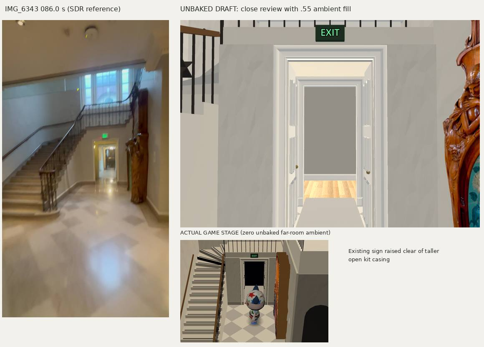
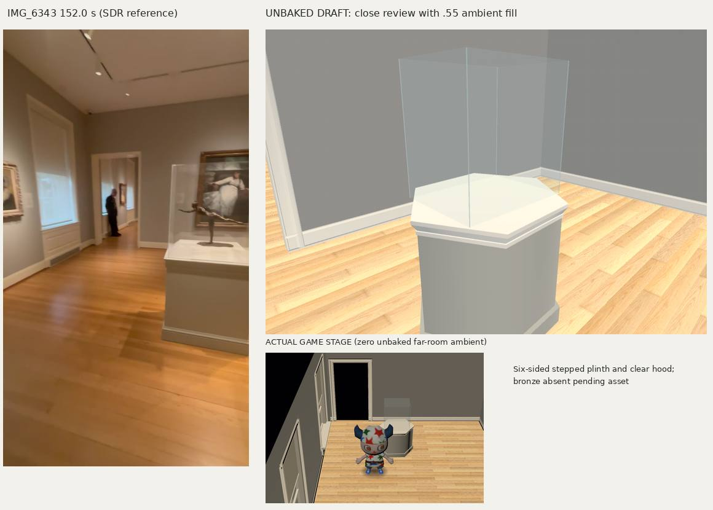
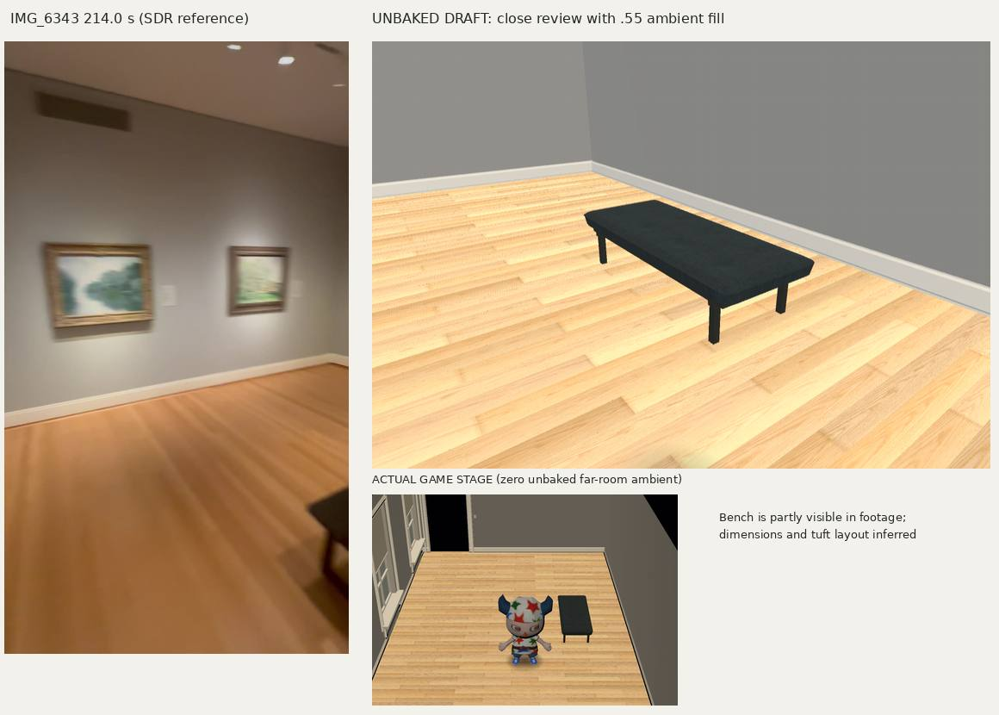
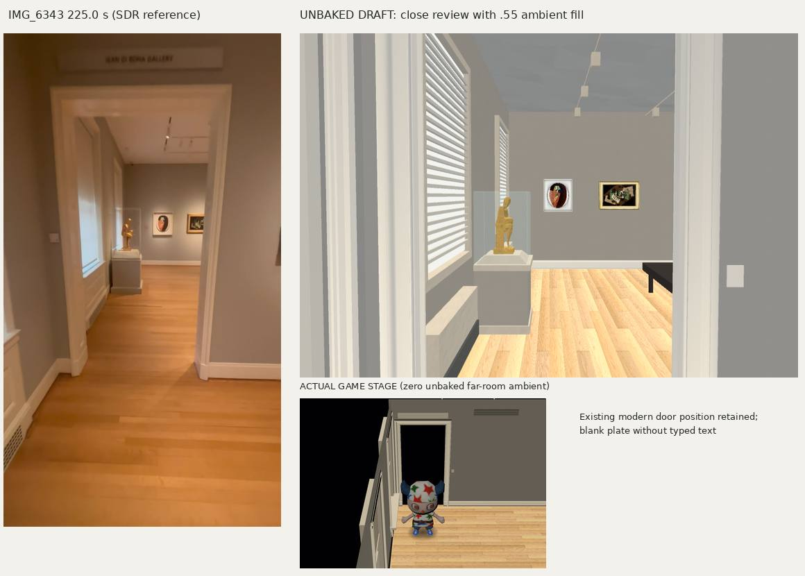
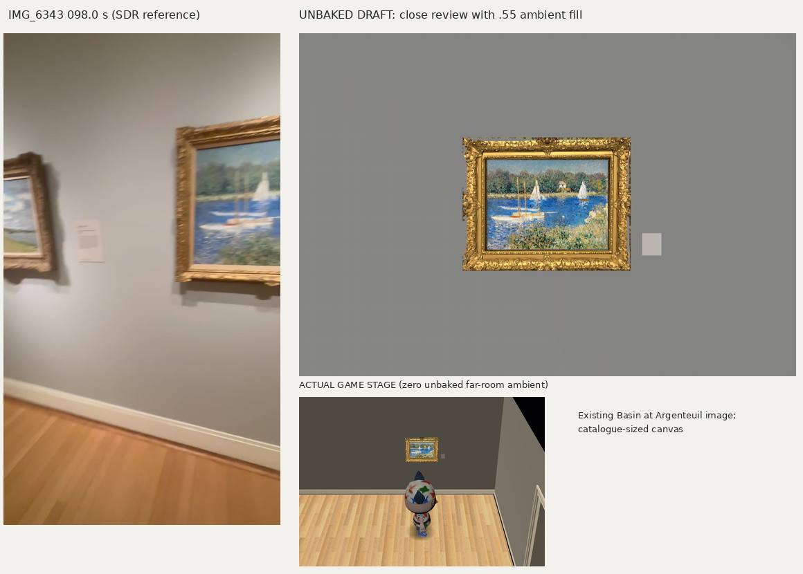
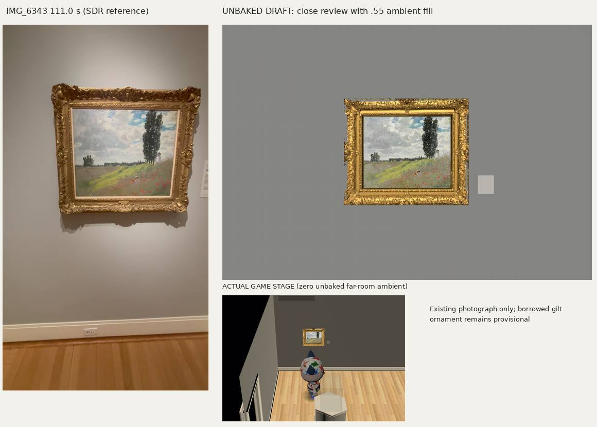
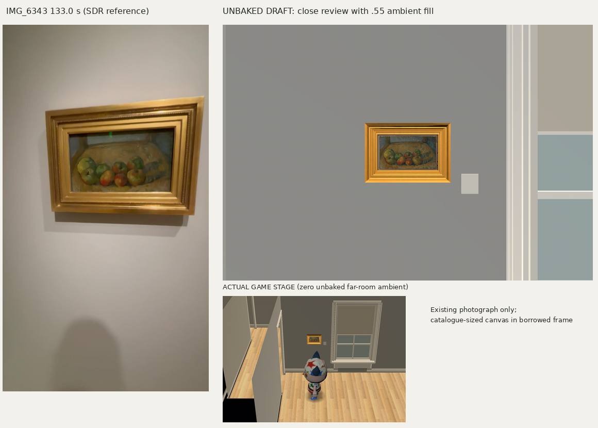
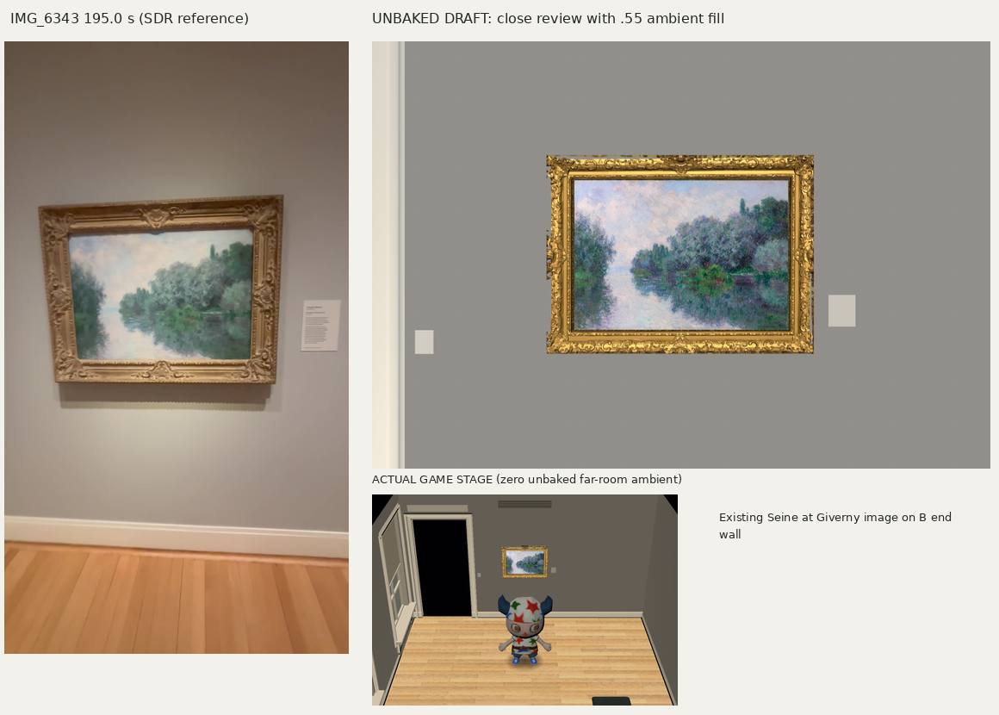
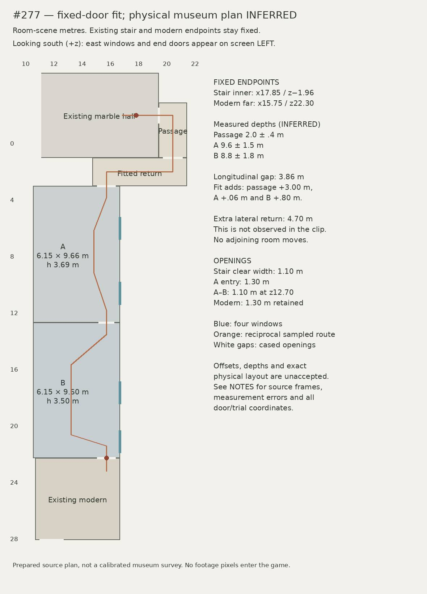